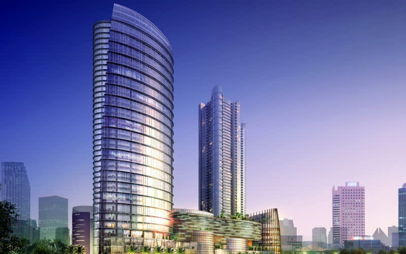

MIA atau Market Interact Association adalah sebuah perusahaan perdangan antara brand atau merk-merk
terkenal seperti Nike, Adidas dan Puma. Fun fact, MIA merupakan singkatan dari nama pendiri
perusahaan tersebut yaitu Muhammad Iqbal Abdillah. Sebenarnya nama perusahaan akan menggunakan nama pendirinya,
namun dia menemukan ide atau namanya diganti saja menjadi Market Interact Association
Lokasi
Lokasi gedung perusahaan MIA sudah ada di beberapa kota-kota besar seperti Jakarta, Bandung, Jogjakarta, dan Surabaya.
Awalnya, lokasi MIA itu berada di rumah pendirinya sendiri. Setelah sekian lama perjuangan, akhirnya perusahaan
MIA berhasil memiliki gedung tingkat di Bandung.
 Market Interact Association
Market Interact Association